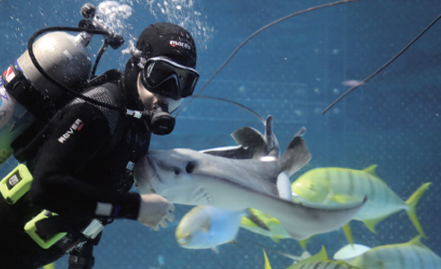
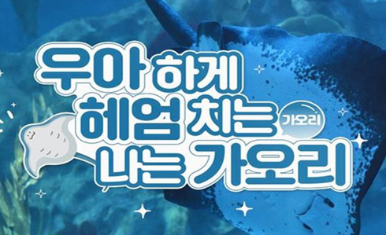
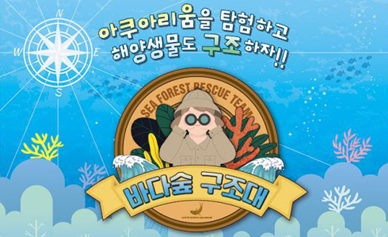
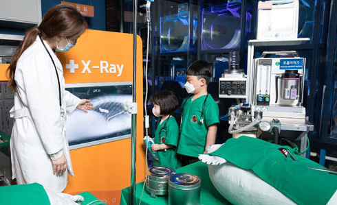
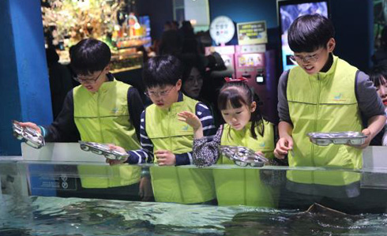
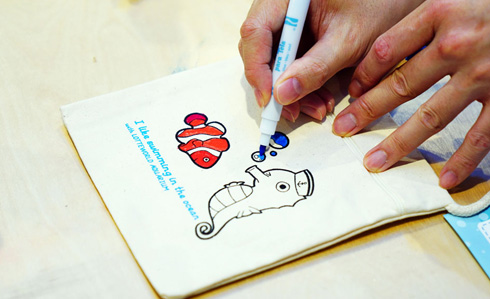
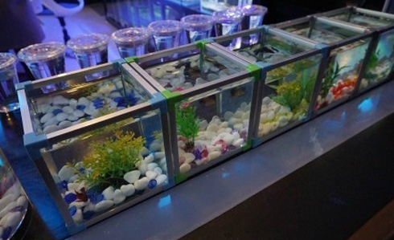
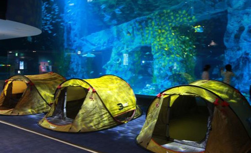

home>이용정보>프로그램
프로그램
롯데월드 아쿠아리움의 생태설명 프로그램 입니다.

- 메인수조 피딩스테이션 먹이주기
- 아쿠아리스트의 메인수조 전시 생물 먹이 급이 시간
- 대상 : 전체
- 참가인원 : 제한 없음
- 장소 : 지하 2층 메인수조 정면
- 운영시간 : 12시 30분 / 15시 30분 (주말)
- 요금 : 무료

- [단체] 아쿠아리움 사전 영상교육
- 아쿠아리스트와 함께 해양생물들에 대하여 보고 배우는 시간
- 대상 : 전체
- 참가인원 : 15명 이상
- 장소 : 온라인
- 운영시간 : 협의 후 진행
- 요금 : 무료
롯데월드 아쿠아리움의 체험 프로그램 입니다.

- 바다 숲 구조대
- 오염된 바다숲을 구조하는 방법을 아쿠아리움에서 배워보자
- 대상 : 초등학생
- 참가인원 : 6명~20명
- 장소 : 아쿠아리움 내
- 운영시간 : 7/29(토), 8/19(토) 13시~16시
- 요금 : 별도 문의 (02-3213-3213)

- SOS 해양 구조대
- 위기에 처한 해양동물을 치료하는 해양동물 수의사가 되어보기
- 대상 : 유아
- 참가인원 : 타임당 6명
- 장소 : B2F 동물병원
- 운영시간 : 11시 - 18시 (마지막 타임: 17시)
- 요금 : 9,000원

- 물고기 도시락
- 주말, 공휴일 운영합니다.
- 대상 : 전체
- 참가인원 : 타임당 6명
- 장소 : B2F 플레이존
- 운영시간 : 11:00~17:30 (도시락 소진시 조기종료)
- 요금 : 9,000원

- 스타트 마린 프렌즈
- 아쿠아리움의 여러가지 굿즈를 만들고 체험해보세요.
- 대상 : 전체
- 참가인원 : 제한없음
- 장소 : B2F 플레이존
- 운영시간 : 10:30~18:00 (17:30 판매마감)
- 요금 : 3,000~11,000원
롯데월드 아쿠아리움의 교육/단체 프로그램 입니다.

- 나만의 수조 만들기
- 관찰력과 따뜻한 마음을 키울 수 있는 힐링체험 입니다.
- 대상 : 전체
- 참가인원 : 제한없음
- 장소 : B2F 플레이존
- 운영시간 : 10:00~18:00 (17:30 판매마감)
- 요금 : 25,000원

- 아쿠아 패밀리 캠프 (아쿠아 나이트 캠프)
- 아쿠아리움에서 단체로 즐기는 나이트 캠프!
- 대상 : 전체
- 참가인원 : 20명 이상
- 장소 : 아쿠아리움 내
- 운영시간 : 1박 2일 (별도 전화 문의)
- 요금 : 별도 문의 (02-3213-3213)